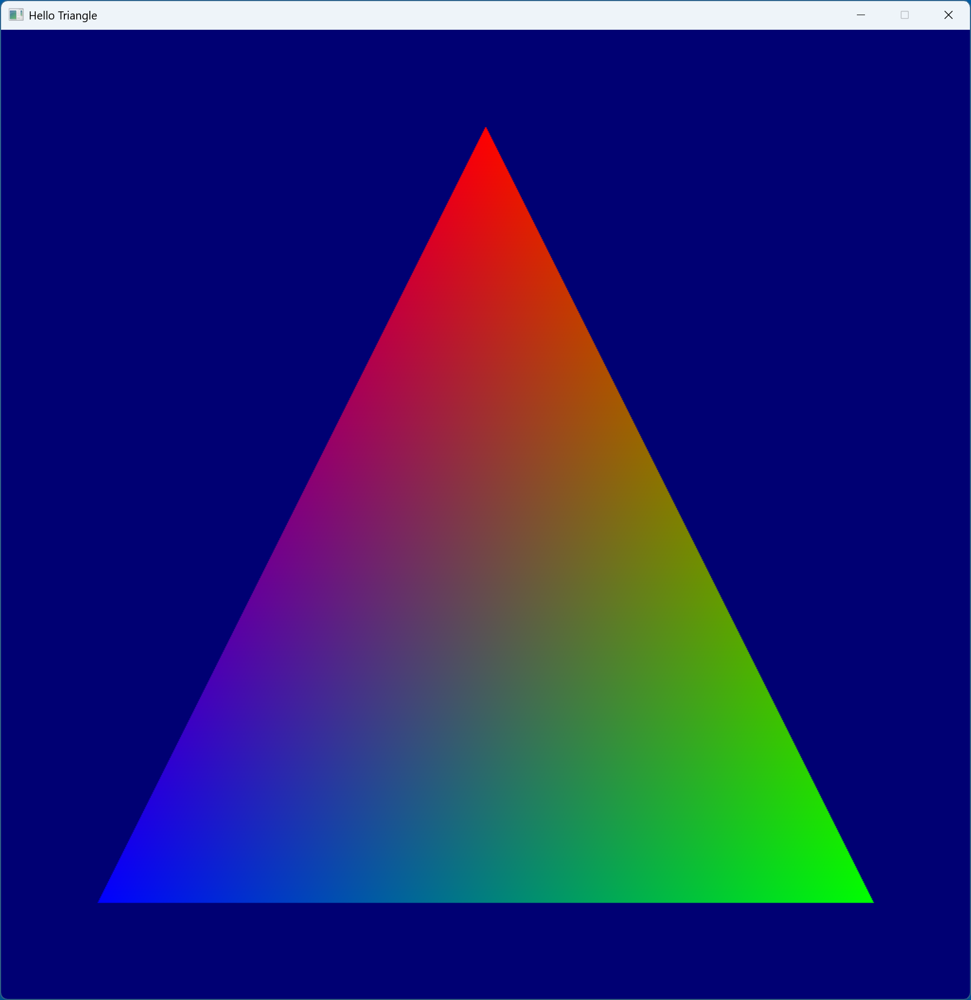

Vulkan can be a very daunting graphics API to get started with. It is very verbose and explicit, requiring the programmer to set up many objects before they can even begin rendering to the screen. This set up can be broken down into simpler steps, making it easier to understand and get started.
A bare bones Vulkan set up can be simplified down into the steps:
- Create the window
- Create a Vulkan instance
- Enumerate the available GPUs
- Create a Vulkan device
- Create a graphics queue
- Initialize memory heaps/buffers
- Create the swapchain
- Create the render pass
- Create the framebuffers
Once that is set up, we can implement the actual rendering logic for Hello Triangle as follows:
- Create/upload the triangle vertex buffer
- Create the vertex/fragment shaders
- Create the graphics pipeline
- Implement the main loop and render function
The complete source code for this tutorial can be found in this github repository.
We will use the SDL library to create the window. SDL is a very popular/well supported library, and makes it very easy to create windows.
We start by initializing SDL and loading the Vulkan library, then we can create the SDL window.
1.SDL_Window* Window { nullptr };
2....
4.Assert(SDL_Init(SDL_INIT_EVERYTHING) == 0, "Could not initialize SDL");
6.Assert(SDL_Vulkan_LoadLibrary(nullptr) == 0, "Could not load the vulkan library");
7.Window = SDL_CreateWindow(APP_NAME, SDL_WINDOWPOS_CENTERED, SDL_WINDOWPOS_CENTERED, WIDTH, HEIGHT, SDL_WINDOW_VULKAN | SDL_WINDOW_SHOWN);
9.Assert(Window != nullptr, "Could not create SDL window");
After the window is created, we need to poll and handle SDL's events. The main one being SDL_QUIT, which tells the application
the user has pressed the close button. Here we also exit if the user presses the escape key.
1.bool Running { true };
2....
4.void Update(void)
6.{
7. SDL_Event event = { 0 };
8. while (SDL_PollEvent(&event) != 0)
9. {
10. switch (event.type)
11. {
12. case SDL_QUIT:
13. {
14. Running = false; // The main loop will exit once this becomes false
15. break;
16. }
17. case SDL_KEYDOWN:
18. {
19. switch (event.key.keysym.scancode)
20. {
21. case SDL_SCANCODE_ESCAPE:
22. Running = false; // The main loop will exit once this becomes false
23. break;
24. default:
25. break;
26. }
27. break;
28. }
29. default:
30. break;
31. }
32. }
33.}
Before creating the Vulkan instance, the application can enumerate all the available layers/extensions available from the API/driver.
These layers/extensions can give optional functionality/features if the application requests them during instance creation.
We can enumerate the layers and extensions using the vkEnumerateDeviceLayerProperties and vkEnumerateDeviceExtensionProperties functions.
Normally an application will validate if its required layers/extensions are available, but here we simply print them out.
1.uint32_t ExtCount = 0;
2.uint32_t LayerCount = 0;
3.Assert(vkEnumerateInstanceLayerProperties(&LayerCount, nullptr) == VK_SUCCESS, "Could not get number of instance layers");
5.std::vector<VkLayerProperties> AvailableLayers(LayerCount);
7.Assert(vkEnumerateInstanceLayerProperties(&LayerCount, AvailableLayers.data()) == VK_SUCCESS, "Could not get instance layers");
8.for (uint32_t i = 0; i <= AvailableLayers.size(); i++)
10.{
11. const char* pLayerName = (i == 0) ? nullptr : AvailableLayers[i − 1].layerName;
12. Assert(vkEnumerateInstanceExtensionProperties(pLayerName, &ExtCount, nullptr) == VK_SUCCESS, "Could not get extension count for instance layer");
14. std::vector<VkExtensionProperties> AvailableExtensions(ExtCount);
16. Assert(vkEnumerateInstanceExtensionProperties(pLayerName, &ExtCount, AvailableExtensions.data()) == VK_SUCCESS, "Could not get extensions for instance layer");
17. printf("Instance layer: %s\n", (pLayerName == nullptr) ? "Global" : pLayerName);
19. for (uint32_t j = 0; j < AvailableExtensions.size(); j++)
20. {
21. printf("\t%s\n", AvailableExtensions[j].extensionName);
22. }
23.}
24.
SDL requires certain extensions to be enabled when the Vulkan instance is created. We can get these using SDL_Vulkan_GetInstanceExtensions.
1.Assert(SDL_Vulkan_GetInstanceExtensions(Window, &ExtCount, nullptr) == SDL_TRUE, "Could not get number of required SDL extensions");
2.std::vector<const char*> RequiredLayers;
4.std::vector<const char*> RequiredExtensions(ExtCount);
5.Assert(SDL_Vulkan_GetInstanceExtensions(Window, &ExtCount, RequiredExtensions.data()) == SDL_TRUE, "Could not get required SDL extensions");
If you want to be thorough, you can validate these required extensions are supported by following the code in section A.
The validation layer can help catch bad parameters, memory leaks, invalid API calls, and many other errors. It is very useful for catching bugs. To enable it, simply add it to the required layer/extension list.
1.#ifdef DEBUG // Only add the validation layer/extension if this is a debug build
2. RequiredLayers.push_back("VK_LAYER_KHRONOS_validation");
3. RequiredExtensions.push_back(VK_EXT_DEBUG_REPORT_EXTENSION_NAME);
4.#endif
Note that enabling this validation extension is not enough, we need to do some additional set up after creating the instance. This will be covered in section 2.E.
To create the actual instance, we fill out the VkApplicationInfo and VkInstanceCreateInfo structures,
and call vkCreateInstance. The application structure specifies the app and engine names/versions, and the required Vulkan API version.
The instance structure will take a pointer to the application structure and the lists of the required layers/extensions.
1.VkApplicationInfo AppInfo =
2.{
3. .sType = VK_STRUCTURE_TYPE_APPLICATION_INFO,
4. .pNext = nullptr,
5. .pApplicationName = APP_NAME,
6. .applicationVersion = 1,
7. .pEngineName = APP_NAME,
8. .engineVersion = 1,
9. .apiVersion = VK_API_VERSION_1_0
10.};
11.VkInstanceCreateInfo InstanceInfo =
13.{
14. .sType = VK_STRUCTURE_TYPE_INSTANCE_CREATE_INFO,
15. .pNext = nullptr,
16. .flags = 0,
17. .pApplicationInfo = &AppInfo,
18. .enabledLayerCount = static_cast<uint32_t>(RequiredLayers.size()),
19. .ppEnabledLayerNames = RequiredLayers.data(),
20. .enabledExtensionCount = static_cast<uint32_t>(RequiredExtensions.size()),
21. .ppEnabledExtensionNames = RequiredExtensions.data()
22.};
23.Assert(vkCreateInstance(&InstanceInfo, nullptr, &Instance) == VK_SUCCESS, "Failed to create vulkan instance");
If you followed 2.C, once the instance is created, we need to set up the debug report callback which Vulkan
will use to send the debug messages. We first need to use
vkGetInstanceProcAddr to get the function pointers to the callbacks vkCreateDebugReportCallback and
vkDestroyDebugReportCallback. After getting the function addresses, we can create the debug report callback
object VkDebugReportCallbackEXT.
1.#ifdef DEBUG
2. VkDebugReportCallbackEXT hVkDebugReport { nullptr };
3. PFN_vkCreateDebugReportCallbackEXT vkCreateDebugReportCb { nullptr };
4. PFN_vkDestroyDebugReportCallbackEXT vkDestroyDebugReportCb { nullptr };
5.#endif
6....
8.#ifdef DEBUG
10. static VkBool32 VulkanDebugReportCb(VkDebugReportFlagsEXT flags, VkDebugReportObjectTypeEXT objectType, uint64_t object, size_t location, int32_t messageCode, const char* pLayerPrefix, const char* pMessage, void* pUserData)
11. {
12. printf("%s: %s\n", pLayerPrefix, pMessage);
13. return VK_TRUE;
14. }
15.#endif
16....
18.#ifdef DEBUG
20. vkCreateDebugReportCb = reinterpret_cast<PFN_vkCreateDebugReportCallbackEXT>(vkGetInstanceProcAddr(Instance, "vkCreateDebugReportCallbackEXT"));
21. vkDestroyDebugReportCb = reinterpret_cast<PFN_vkDestroyDebugReportCallbackEXT>(vkGetInstanceProcAddr(Instance, "vkDestroyDebugReportCallbackEXT"));
22. Assert(vkCreateDebugReportCb != nullptr, "Could not get debug report callback");
24. Assert(vkDestroyDebugReportCb != nullptr, "Could not get debug report callback");
25. VkDebugReportCallbackCreateInfoEXT CallbackInfo =
27. {
28. .sType = VK_STRUCTURE_TYPE_DEBUG_REPORT_CALLBACK_CREATE_INFO_EXT,
29. .pNext = nullptr,
30. .flags = VK_DEBUG_REPORT_INFORMATION_BIT_EXT | VK_DEBUG_REPORT_WARNING_BIT_EXT | VK_DEBUG_REPORT_PERFORMANCE_WARNING_BIT_EXT |
31. VK_DEBUG_REPORT_ERROR_BIT_EXT | VK_DEBUG_REPORT_DEBUG_BIT_EXT,
32. .pfnCallback = VulkanDebugReportCb,
33. .pUserData = nullptr
34. };
35. Assert(vkCreateDebugReportCb(Instance, &CallbackInfo, nullptr, &hVkDebugReport) == VK_SUCCESS, "Failed to register debug callback\n");
37.#endif
Vulkan gives a list of all the GPUs in the current system through the vkEnumeratePhysicalDevices function.
1.uint32_t DeviceCount = 0;
2.Assert(vkEnumeratePhysicalDevices(Instance, &DeviceCount, nullptr) == VK_SUCCESS, "Could not get number of physical devices");
3.std::vector<VkPhysicalDevice> DeviceHandles(DeviceCount);
5.Assert(vkEnumeratePhysicalDevices(Instance, &DeviceCount, DeviceHandles.data()) == VK_SUCCESS, "Could not get physical devices");
Once we have all the device handles, we can get the properties of each device. This includes:
- The GPU name
- The GPU type (integrated, discrete, etc.)
- The types and counts of queues available on the GPU (graphics, compute, copy, etc.)
- The type and amounts of memory available in the GPU
We will be using a simple algorithm which sorts the GPUs by their type (integrated vs discrete), the number of graphics queues available, and the amount of local memory available. After sorting the GPUs, the one with the highest preference will be selected.
1.const std::map<VkPhysicalDeviceType, uint32_t> PreferenceOrder =
2.{
3. { VK_PHYSICAL_DEVICE_TYPE_DISCRETE_GPU, 2 },
4. { VK_PHYSICAL_DEVICE_TYPE_INTEGRATED_GPU, 1 }
5.};
6.struct PhysicalDeviceInfo
8.{
9. VkPhysicalDevice Handle;
10. uint32_t OriginalIndex;
11. uint32_t PreferenceIndex;
12. uint32_t GraphicsQueueGroup;
13. uint32_t NumGraphicsQueues;
14. uint64_t LocalHeapSize;
15.};
16.uint32_t QueueCount = 0;
18.std::vector<PhysicalDeviceInfo> PhysicalDevices;
20.for (uint32_t i = 0; i < DeviceHandles.size(); i++)
22.{
23. VkPhysicalDeviceFeatures DeviceFeatures{};
24. VkPhysicalDeviceProperties DeviceProperties{};
25. VkPhysicalDeviceMemoryProperties MemoryProperties{};
26. PhysicalDeviceInfo DeviceInfo{ DeviceHandles[i], i, 0, UINT32_MAX, 0, 0 };
28. vkGetPhysicalDeviceFeatures(DeviceHandles[i], &DeviceFeatures);
30. vkGetPhysicalDeviceProperties(DeviceHandles[i], &DeviceProperties);
31. vkGetPhysicalDeviceMemoryProperties(DeviceHandles[i], &MemoryProperties);
32. vkGetPhysicalDeviceQueueFamilyProperties(DeviceHandles[i], &QueueCount, nullptr);
34. std::vector<VkQueueFamilyProperties> QueueGroups(QueueCount);
36. vkGetPhysicalDeviceQueueFamilyProperties(DeviceHandles[i], &QueueCount, QueueGroups.data());
37. std::map<VkPhysicalDeviceType, uint32_t>::const_iterator it = PreferenceOrder.find(DeviceProperties.deviceType);
39. if (it != PreferenceOrder.end())
40. {
41. DeviceInfo.PreferenceIndex = it−>second;
42. }
43. for (uint32_t j = 0; j < QueueGroups.size(); j++)
45. {
46. if (QueueGroups[j].queueFlags & VK_QUEUE_GRAPHICS_BIT)
47. {
48. DeviceInfo.GraphicsQueueGroup = std::min(DeviceInfo.GraphicsQueueGroup, j); // Pick the first (minimum) available group, we only use 1 gfx queue, so the group does not matter
49. DeviceInfo.NumGraphicsQueues += QueueGroups[j].queueCount;
50. }
51. }
52. for (uint32_t j = 0; j < MemoryProperties.memoryHeapCount; j++)
54. {
55. if (MemoryProperties.memoryHeaps[j].flags & VK_MEMORY_HEAP_DEVICE_LOCAL_BIT)
56. {
57. DeviceInfo.LocalHeapSize += MemoryProperties.memoryHeaps[j].size;
58. }
59. }
60. PhysicalDevices.push_back(DeviceInfo);
62.}
63.Assert(PhysicalDevices.size() > 0, "Could not find a supported GPU");
65.#define COMPARE(a, b) { if ((a) > (b)) { return true; } else if ((a) < (b)) { return false; } }
67.std::sort(PhysicalDevices.begin(), PhysicalDevices.end(), [](const PhysicalDeviceInfo& lhs,
68. const PhysicalDeviceInfo& rhs) −> bool {
69. COMPARE(lhs.PreferenceIndex, rhs.PreferenceIndex);
70. COMPARE(lhs.NumGraphicsQueues, rhs.NumGraphicsQueues);
71. COMPARE(lhs.LocalHeapSize, rhs.LocalHeapSize);
72. return false;
73. }
74.);
75.#undef CMP
76.PhysicalDevice = PhysicalDevices[0].Handle;
78.GraphicsQueueGroup = PhysicalDevices[0].GraphicsQueueGroup;
Note we also store the graphics queue group index because this will be used to create the graphics queue later on.
Once the physical device is determined, we have to create a logical device.
Similar to when we had created the instance, we can get the device's available layers/extensions using the functions vkEnumerateDeviceLayerProperties and vkEnumerateDeviceExtensionProperties.
1.uint32_t ExtCount = 0;
2.uint32_t LayerCount = 0;
3.Assert(vkEnumerateDeviceLayerProperties(PhysicalDevice, &ExtCount, nullptr) == VK_SUCCESS, "Failed to get number of device layers");
5.std::vector<VkLayerProperties> AvailableLayers(ExtCount);
7.Assert(vkEnumerateDeviceLayerProperties(PhysicalDevice, &ExtCount, AvailableLayers.data()) == VK_SUCCESS, "Failed to get device layers");
8.for (uint32_t i = 0; i <= AvailableLayers.size(); i++)
10.{
11. const char* pLayerName = (i == 0) ? nullptr : AvailableLayers[i − 1].layerName;
12. Assert(vkEnumerateDeviceExtensionProperties(PhysicalDevice, pLayerName, &LayerCount, nullptr) == VK_SUCCESS, "Could not get extension count for instance layer");
14. std::vector<VkExtensionProperties> AvailableExtensions(LayerCount);
16. Assert(vkEnumerateDeviceExtensionProperties(PhysicalDevice, pLayerName, &LayerCount, AvailableExtensions.data()) == VK_SUCCESS, "Could not get extensions for instance layer");
17. printf("Device layer: %s\n", (pLayerName == nullptr) ? "Global" : pLayerName);
19. for (uint32_t j = 0; j < AvailableExtensions.size(); j++)
20. {
21. printf("\t%s\n", AvailableExtensions[j].extensionName);
22. }
23.}
Note that we require the VK_KHR_SWAPCHAIN_EXTENSION_NAME extension when creating the logical device, because we will be creating a swapchain on this device.
Once we have figured out which layers/extensions are available and which ones we need, we can create the device. Note that we also have to request the queues we will be using
at the device creation time in the VkDeviceQueueCreateInfo structure. Here we only request the one graphics queue from the group we picked in section 3.
1.std::vector<const char*> RequiredExtensions { VK_KHR_SWAPCHAIN_EXTENSION_NAME };
2.const float QueuePriority = 1.0f;
4.VkDeviceQueueCreateInfo QueueInfo =
6.{
7. .sType = VK_STRUCTURE_TYPE_DEVICE_QUEUE_CREATE_INFO,
8. .pNext = nullptr,
9. .flags = 0,
10. .queueFamilyIndex = GraphicsQueueGroup,
11. .queueCount = 1,
12. .pQueuePriorities = &QueuePriority
13.};
14.VkDeviceCreateInfo DeviceInfo =
16.{
17. .sType = VK_STRUCTURE_TYPE_DEVICE_CREATE_INFO,
18. .pNext = nullptr,
19. .flags = 0,
20. .queueCreateInfoCount = 1,
21. .pQueueCreateInfos = &QueueInfo,
22. .enabledLayerCount = 0,
23. .ppEnabledLayerNames = nullptr,
24. .enabledExtensionCount = static_cast<uint32_t>(RequiredExtensions.size()),
25. .ppEnabledExtensionNames = RequiredExtensions.data(),
26. .pEnabledFeatures = nullptr
27.};
28.Assert(vkCreateDevice(PhysicalDevice, &DeviceInfo, nullptr, &Device) == VK_SUCCESS, "Could not create vk device");
We already created the graphics queue in section 4, so we can simply get a handle to it using vkGetDeviceQueue.
1.VkQueue GraphicsQueue { nullptr };
2....
4.vkGetDeviceQueue(Device, GraphicsQueueGroup, 0, &GraphicsQueue);
6.Assert(GraphicsQueue != nullptr, "Could not get gfx queue 0");
However, the queue still needs a couple more objects for us to be able to use it. Those objects are:
- A command pool
- A command buffer
- A fence
A command pool, represented by the structure VkCommandPool, is used to allocate command buffers. Command buffers, represented by the structure
VkCommandBuffer, are used to record commands for rendering and doing other graphics operations. A command pool can be used to allocate many command buffers,
but we will only need one for our simple app. And lastly, the fence is used for syncronizing work between the CPU and GPU. We will give Vulkan this fence object
when we submit work to the GPU, and this fence will get signalled once the workload finishes. This will let us syncronize the CPU by waiting on the fence for the submission to finish.
1.VkCommandPool CommandPool { nullptr };
2.VkCommandBuffer CommandBuffer { nullptr };
3.VkFence Fence { nullptr };
4....
6.VkCommandPoolCreateInfo CommandPoolInfo =
8.{
9. .sType = VK_STRUCTURE_TYPE_COMMAND_POOL_CREATE_INFO,
10. .pNext = nullptr,
11. .flags = VK_COMMAND_POOL_CREATE_TRANSIENT_BIT | VK_COMMAND_POOL_CREATE_RESET_COMMAND_BUFFER_BIT,
12. .queueFamilyIndex = GraphicsQueueGroup
13.};
14.Assert(vkCreateCommandPool(Device, &CommandPoolInfo, nullptr, &CommandPool) == VK_SUCCESS, "Could not create the command pool");
16.VkCommandBufferAllocateInfo CommandBufferInfo =
18.{
19. .sType = VK_STRUCTURE_TYPE_COMMAND_BUFFER_ALLOCATE_INFO,
20. .pNext = nullptr,
21. .commandPool = CommandPool,
22. .level = VK_COMMAND_BUFFER_LEVEL_PRIMARY,
23. .commandBufferCount = 1
24.};
25.Assert(vkAllocateCommandBuffers(Device, &CommandBufferInfo, &CommandBuffer) == VK_SUCCESS, "Could not create the command buffer");
27.VkFenceCreateInfo FenceInfo =
29.{
30. .sType = VK_STRUCTURE_TYPE_FENCE_CREATE_INFO,
31. .pNext = nullptr,
32. .flags = 0
33.};
34.Assert(vkCreateFence(Device, &FenceInfo, nullptr, &Fence) == VK_SUCCESS, "Failed to create fence");
Memory management is a very important concept in Vulkan. The developer is responsible for figuring out which parts of the memory to use, how to manage the memory usage, etc. For this example we are only concerned with two types of memory:
- Device local memory (the VRAM inside the GPU)
- Host visible memory (CPU visible memory)
These categories are not mutually exclusive. Most discrete GPUs have their own local video memory (VRAM) which is optimal for GPU access, but only a portion of that is accessible from the CPU. Integrated GPUs on the other hand, can see the entire system memory as both local and CPU visible. Resizable bar can also give the CPU access to the entire GPU VRAM, but here we assume that is not being used. A very common and simple solution is to use the large local CPU invisible memory as the primary heap, and use the small local CPU visible memory as a staging area. Data will first be copied to the staging area using the CPU, and then transferred from the staging area to the primary heap using the GPU.
We first need to get the device's memory properties, using vkGetPhysicalDeviceMemoryProperties, and then we can figure out the most optimal heaps available on the GPU.
1.uint32_t PrimaryHeapIndex { UINT32_MAX };
2.uint32_t UploadHeapIndex { UINT32_MAX };
3.VkPhysicalDeviceMemoryProperties MemoryProperties {};
5....
7.vkGetPhysicalDeviceMemoryProperties(PhysicalDevice, &MemoryProperties);
9.for (uint32_t i = 0; i < MemoryProperties.memoryTypeCount; i++)
11.{
12. uint64_t HeapSize = MemoryProperties.memoryHeaps[MemoryProperties.memoryTypes[i].heapIndex].size;
13. if (MemoryProperties.memoryTypes[i].propertyFlags & VK_MEMORY_PROPERTY_DEVICE_LOCAL_BIT)
15. {
16. if ((PrimaryHeapIndex == UINT32_MAX) || (HeapSize > MemoryProperties.memoryHeaps[PrimaryHeapIndex].size))
17. {
18. PrimaryHeapIndex = MemoryProperties.memoryTypes[i].heapIndex;
19. }
20. }
21. if ((MemoryProperties.memoryTypes[i].propertyFlags & VK_MEMORY_PROPERTY_DEVICE_LOCAL_BIT)
23. && (MemoryProperties.memoryTypes[i].propertyFlags & VK_MEMORY_PROPERTY_HOST_VISIBLE_BIT))
24. {
25. if ((UploadHeapIndex == UINT32_MAX) || (HeapSize > MemoryProperties.memoryHeaps[UploadHeapIndex].size))
26. {
27. UploadHeapIndex = MemoryProperties.memoryTypes[i].heapIndex;
28. UploadBufferSize = std::min(ALIGN(HeapSize / 4, MB), static_cast<uint64_t>(16 * MB));
29. }
30. }
31.}
32.Assert(PrimaryHeapIndex != UINT32_MAX, "Could not find primary heap");
34.Assert(UploadHeapIndex != UINT32_MAX, "Could not find upload heap");
Once we have the primary and upload heaps figured out, we can allocate a large buffer in the upload heap, which will be used as an intermediate buffer before
being transferred to the primary heap for future resources. Note that after we create the upload buffer, we also have to map it to the CPU address space using vkMapMemory, so that the
CPU can access it.
1.VkBuffer UploadBuffer { nullptr };
2.VkDeviceMemory UploadBufferMemory { nullptr };
3.uint64_t UploadBufferSize { 0 };
5.void* UploadBufferCpuVA { nullptr };
6....
8.VkBufferCreateInfo UploadBufferInfo =
10.{
11. .sType = VK_STRUCTURE_TYPE_BUFFER_CREATE_INFO,
12. .pNext = nullptr,
13. .flags = 0,
14. .size = UploadBufferSize,
15. .usage = VK_BUFFER_USAGE_TRANSFER_SRC_BIT,
16. .sharingMode = VK_SHARING_MODE_EXCLUSIVE,
17. .queueFamilyIndexCount = 0,
18. .pQueueFamilyIndices = nullptr
19.};
20.Assert(vkCreateBuffer(Device, &UploadBufferInfo, nullptr, &UploadBuffer) == VK_SUCCESS, "Failed to create upload buffer");
22.VkMemoryRequirements UploadBufferRequirements = {};
24.vkGetBufferMemoryRequirements(Device, UploadBuffer, &UploadBufferRequirements);
25.AllocateMemory(UploadBufferRequirements, VK_MEMORY_PROPERTY_DEVICE_LOCAL_BIT & VK_MEMORY_PROPERTY_HOST_VISIBLE_BIT, UploadHeapIndex, UploadBufferMemory);
27.Assert(vkBindBufferMemory(Device, UploadBuffer, UploadBufferMemory, 0) == VK_SUCCESS, "Failed to bind upload buffer memory");
28.Assert(vkMapMemory(Device, UploadBufferMemory, 0, UploadBufferSize, 0, &UploadBufferCpuVA) == VK_SUCCESS, "Failed to map upload buffer memory");
This is the helper function used above, which allocates memory directly from a heap given its index. This will be useful for other allocations as well, such as the vertex buffer, and any other future allocations we need.
1.void AllocateMemory(const VkMemoryRequirements& rMemoryRequirements, VkMemoryPropertyFlags Flags, uint32_t HeapIndex, VkDeviceMemory& rMemory) const
2.{
3. for (uint32_t i = 0; i < MemoryProperties.memoryTypeCount; i++)
4. {
5. if ((rMemoryRequirements.memoryTypeBits & (1 << i))
6. && ((MemoryProperties.memoryTypes[i].propertyFlags & Flags) == Flags)
7. && (MemoryProperties.memoryTypes[i].heapIndex == HeapIndex))
8. {
9. VkMemoryAllocateInfo AllocationInfo;
10. AllocationInfo.sType = VK_STRUCTURE_TYPE_MEMORY_ALLOCATE_INFO;
11. AllocationInfo.pNext = nullptr;
12. AllocationInfo.allocationSize = rMemoryRequirements.size;
13. AllocationInfo.memoryTypeIndex = i;
14. Assert(vkAllocateMemory(Device, &AllocationInfo, nullptr, &rMemory) == VK_SUCCESS, "Failed to allocate vertex buffer memory");
16. break;
17. }
18. }
19. Assert(rMemory != nullptr, "Unable to allocate memory");
21.}
The swapchain contains the sequence of images which we will render to and present on the screen.
Before we create the swapchain, we need to create a Vulkan surface for our SDL window. This surface will let Vulkan render on SDL's window,
and will be required for creating the swapchain. SDL provides a function SDL_Vulkan_CreateSurface to create this.
1.VkSurfaceKHR Surface { nullptr };
2....
4.Assert(SDL_Vulkan_CreateSurface(Window, Instance, &Surface) == VK_TRUE, "Failed to create surface");
After we create the surface, we need to check if our required surface formats and presentation mode are supported. The surface format
is the format of the swapchain images, in our case VK_FORMAT_B8G8R8A8_UNORM, which gives 8 bits to each red/green/blue/alpha component.
The presentation mode controls how the images of the swapchain are presented. We will be using VK_PRESENT_MODE_FIFO_KHR, which will present the swapchain images one by one in a queue
and will only present an image once the previous one has been fully presented (i.e. vertically synced).
1.uint32_t PresentModeCount = 0;
2.uint32_t SurfaceFormatCount = 0;
3.Assert(vkGetPhysicalDeviceSurfacePresentModesKHR(PhysicalDevice, Surface, &PresentModeCount, nullptr) == VK_SUCCESS, "Could not get the number of supported presentation modes");
5.Assert(vkGetPhysicalDeviceSurfaceFormatsKHR(PhysicalDevice, Surface, &SurfaceFormatCount, nullptr) == VK_SUCCESS, "Could not get the number of supported surface formats");
6.std::vector<VkPresentModeKHR> PresentModes(PresentModeCount);
8.std::vector<VkSurfaceFormatKHR> SurfaceFormats(SurfaceFormatCount);
9.Assert(vkGetPhysicalDeviceSurfacePresentModesKHR(PhysicalDevice, Surface, &PresentModeCount, PresentModes.data()) == VK_SUCCESS, "Could not get the supported presentation modes");
11.Assert(vkGetPhysicalDeviceSurfaceFormatsKHR(PhysicalDevice, Surface, &SurfaceFormatCount, SurfaceFormats.data()) == VK_SUCCESS, "Could not get the number of supported surface formats");
12.for (std::vector<VkSurfaceFormatKHR>::const_iterator it = SurfaceFormats.begin(); it != SurfaceFormats.end(); it++)
14.{
15. if (it−>format == VK_FORMAT_B8G8R8A8_UNORM) { SurfaceFormat = *it; break; }
16.}
17.Assert(SurfaceFormat.format != VK_FORMAT_UNDEFINED, "Could not find required surface format");
19.Assert(std::find(PresentModes.begin(), PresentModes.end(), VK_PRESENT_MODE_FIFO_KHR) != PresentModes.end(), "Could not find required present mode");
We also need to tell the swapchain the size of the images to use and the minimum numbers of swapchain images to create. For that information we first call vkGetPhysicalDeviceSurfaceCapabilitiesKHR
to get the surface capabilities, which will tell us the current surface's dimensions in the currentExtent field, and the minimum number of images required in the minImageCount field.
Once we have this information, we can create the swapchain.
1.VkSurfaceCapabilitiesKHR SurfaceCapabilities = { 0 };
2.Assert(vkGetPhysicalDeviceSurfaceCapabilitiesKHR(PhysicalDevice, Surface, &SurfaceCapabilities) == VK_SUCCESS, "Could not get surface capabilities");
3.VkSwapchainCreateInfoKHR SwapchainInfo =
5.{
6. .sType = VK_STRUCTURE_TYPE_SWAPCHAIN_CREATE_INFO_KHR,
7. .pNext = nullptr,
8. .flags = 0,
9. .surface = Surface,
10. .minImageCount = SurfaceCapabilities.minImageCount,
11. .imageFormat = SurfaceFormat.format,
12. .imageColorSpace = SurfaceFormat.colorSpace,
13. .imageExtent =
14. {
15. .width = SurfaceCapabilities.currentExtent.width,
16. .height = SurfaceCapabilities.currentExtent.height
17. },
18. .imageArrayLayers = 1,
19. .imageUsage = VK_IMAGE_USAGE_COLOR_ATTACHMENT_BIT,
20. .imageSharingMode = VK_SHARING_MODE_EXCLUSIVE,
21. .queueFamilyIndexCount = 0,
22. .pQueueFamilyIndices = nullptr,
23. .preTransform = VK_SURFACE_TRANSFORM_IDENTITY_BIT_KHR,
24. .compositeAlpha = VK_COMPOSITE_ALPHA_OPAQUE_BIT_KHR,
25. .presentMode = VK_PRESENT_MODE_FIFO_KHR,
26. .clipped = VK_TRUE,
27. .oldSwapchain = nullptr
28.};
29.Assert(vkCreateSwapchainKHR(Device, &SwapchainInfo, nullptr, &Swapchain) == VK_SUCCESS, "Failed to create swapchain");
After we create the swapchain, we can get the swapchain's images using vkGetSwapchainImagesKHR. This will be
useful for section 9 when we create the framebuffers.
1.enum
2.{
3. MinSwapchainImages = 2,
4. MaxSwapchainImages = 4
5.};
6.VkImage SwapchainImages[MaxSwapchainImages] {};
8....
10.Assert(vkGetSwapchainImagesKHR(Device, Swapchain, &NumSwapchainImages, nullptr) == VK_SUCCESS, "Could not get number of swapchain images");
12.Assert((NumSwapchainImages >= MinSwapchainImages) && (NumSwapchainImages <= MaxSwapchainImages), "Invalid number of swapchain images");
13.Assert(vkGetSwapchainImagesKHR(Device, Swapchain, &NumSwapchainImages, SwapchainImages) == VK_SUCCESS, "Could not get swapchain images");
Lastly, we need to create semaphores to syncronize access to the swapchain's images. We will need two of them in section 13 - one for waiting for access to the swapchain's image before
rendering, and one for waiting for the swapchain's image to become ready to be presented after rendering is finished. The semaphores can be created using
vkCreateSemaphore.
1.VkSemaphoreCreateInfo SemaphoreInfo =
2.{
3. .sType = VK_STRUCTURE_TYPE_SEMAPHORE_CREATE_INFO,
4. .pNext = nullptr,
5. .flags = 0
6.};
7.Assert(vkCreateSemaphore(Device, &SemaphoreInfo, nullptr, &AcquireSemaphore) == VK_SUCCESS, "Failed to create semaphore");
9.Assert(vkCreateSemaphore(Device, &SemaphoreInfo, nullptr, &ReleaseSemaphore) == VK_SUCCESS, "Failed to create semaphore");
The render pass is used to describe the render targets/attachments the current rendering workload will use. This object will be is necessary to create the framebuffer, and also required by Vulkan in the main rendering logic since rendering operations can only be done in render passes. In this example, we will only be rendering to the swapchain surfaces.
We begin by describing the attachment format, the color/depth/stencil buffer content load/store behaviours at the beginning and end of the render pass,
and the image layout at the beginning/end of the render pass. This information is specified an array of VkAttachmentDescription structures,
and one is needed for each attachment the render pass will use. In our case, we will only have one color attachment, which will be the swapchain surface.
1.VkAttachmentDescription AttachmentDescriptions[] =
2.{
3. { // Color attachment
4. .flags = 0,
5. .format = SurfaceFormat.format,
6. .samples = VK_SAMPLE_COUNT_1_BIT,
7. .loadOp = VK_ATTACHMENT_LOAD_OP_CLEAR,
8. .storeOp = VK_ATTACHMENT_STORE_OP_STORE,
9. .stencilLoadOp = VK_ATTACHMENT_LOAD_OP_DONT_CARE,
10. .stencilStoreOp = VK_ATTACHMENT_STORE_OP_DONT_CARE,
11. .initialLayout = VK_IMAGE_LAYOUT_UNDEFINED, // image layout undefined at the beginning of the render pass
12. .finalLayout = VK_IMAGE_LAYOUT_PRESENT_SRC_KHR // prepare the color attachment for presentation
13. }
14.};
After describing the attachments, we must describe the subpasses. We will only have one pass, so we only define one VkSubpassDescription.
1.VkAttachmentReference ColorAttachments[] =
2.{
3. { // Color attachment
4. .attachment = 0,
5. .layout = VK_IMAGE_LAYOUT_COLOR_ATTACHMENT_OPTIMAL // image layout is VK_IMAGE_LAYOUT_COLOR_ATTACHMENT_OPTIMAL during render pass
6. }
7.};
8.VkSubpassDescription SubpassDescription =
10.{
11. .flags = 0,
12. .pipelineBindPoint = VK_PIPELINE_BIND_POINT_GRAPHICS,
13. .inputAttachmentCount = 0,
14. .pInputAttachments = nullptr,
15. .colorAttachmentCount = 1,
16. .pColorAttachments = ColorAttachments,
17. .pResolveAttachments = nullptr,
18. .pDepthStencilAttachment = nullptr,
19. .preserveAttachmentCount = 0,
20. .pPreserveAttachments = nullptr
21.};
Once these objects are prepared, the render pass can be created.
1.VkRenderPassCreateInfo RenderPassInfo =
2.{
3. .sType = VK_STRUCTURE_TYPE_RENDER_PASS_CREATE_INFO,
4. .pNext = nullptr,
5. .flags = 0,
6. .attachmentCount = sizeof(AttachmentDescriptions) / sizeof(VkAttachmentDescription),
7. .pAttachments = AttachmentDescriptions,
8. .subpassCount = 1,
9. .pSubpasses = &SubpassDescription,
10. .dependencyCount = 0,
11. .pDependencies = nullptr
12.};
13.Assert(vkCreateRenderPass(Device, &RenderPassInfo, nullptr, &RenderPass) == VK_SUCCESS, "Failed to create render pass");
After the swapchain and renderpass are created, we must create a framebuffer for each of the swapchain images.
We begin by creating a VkImageView for each swapchain image, which is necessary for each framebuffer.
1.VkImageView SwapchainImageViews[MaxSwapchainImages] {};
2....
4.for (uint32_t i = 0; i < NumSwapchainImages; i++)
6.{
7. VkImageViewCreateInfo ImageViewInfo =
8. {
9. .sType = VK_STRUCTURE_TYPE_IMAGE_VIEW_CREATE_INFO,
10. .pNext = nullptr,
11. .flags = 0,
12. .image = SwapchainImages[i],
13. .viewType = VK_IMAGE_VIEW_TYPE_2D,
14. .format = SurfaceFormat.format,
15. .components =
16. {
17. .r = VK_COMPONENT_SWIZZLE_IDENTITY,
18. .g = VK_COMPONENT_SWIZZLE_IDENTITY,
19. .b = VK_COMPONENT_SWIZZLE_IDENTITY,
20. .a = VK_COMPONENT_SWIZZLE_IDENTITY
21. },
22. .subresourceRange =
23. {
24. .aspectMask = VK_IMAGE_ASPECT_COLOR_BIT,
25. .baseMipLevel = 0,
26. .levelCount = 1,
27. .baseArrayLayer = 0,
28. .layerCount = 1
29. }
30. };
31. Assert(vkCreateImageView(Device, &ImageViewInfo, nullptr, &SwapchainImageViews[i]) == VK_SUCCESS, "Failed to create image view");
33.}
After we have created all the necessary image views, we can create the framebuffers.
1.VkFramebuffer Framebuffers[MaxSwapchainImages] {};
2....
4.for (uint32_t i = 0; i < NumSwapchainImages; i++)
6.{
7. VkImageView FramebufferAttachments[] =
8. {
9. SwapchainImageViews[i]
10. };
11. VkFramebufferCreateInfo FramebufferInfo =
13. {
14. .sType = VK_STRUCTURE_TYPE_FRAMEBUFFER_CREATE_INFO,
15. .pNext = nullptr,
16. .flags = 0,
17. .renderPass = RenderPass,
18. .attachmentCount = sizeof(FramebufferAttachments) / sizeof(VkImageView),
19. .pAttachments = FramebufferAttachments,
20. .width = WIDTH,
21. .height = HEIGHT,
22. .layers = 1
23. };
24. Assert(vkCreateFramebuffer(Device, &FramebufferInfo, nullptr, &Framebuffers[i]) == VK_SUCCESS, "Failed to create framebuffer");
26.}
At this point, the required Vulkan objects have been set up to provide an equivalent "context" like what OpenGL would provide, and we can start implementing the Hello Triangle logic. The first step is to create the vertex buffer for the triangle we will be rendering.
We begin by defining the actual vertices. Each vertex has 2 attributes, the position and color, both of which are 3D floating point values.
1.struct Vertex
2.{
3. float position[3];
4. float color[3];
5.};
6.static constexpr const Vertex TriangleVertices[] =
8.{
9. { // vertex 0
10. { −0.8f, +0.8f, 0.0f }, // position
11. { 0.0f, 0.0f, 1.0f } // color
12. },
13. { // vertex 1
14. { +0.8f, +0.8f, 0.0f }, // position
15. { 0.0f, 1.0f, 0.0f } // color
16. },
17. { // vertex 2
18. { 0.0f, −0.8f, 0.0f }, // position
19. { 1.0f, 0.0f, 0.0f } // color
20. }
21.};
The next step is to create the buffer, allocate the memory, and bind the memory to that new buffer. Vulkan requires the buffer creation and memory allocation to be seperate because
it gives the programmer flexibility for memory management. For example, if we want, we can create a single memory allocation and sub-allocate that amoungst different buffers. Note that we
are using the AllocateMemory helper function we created in section 6 to allocate the memory in our primary heap.
1.VkBufferCreateInfo BufferInfo =
2.{
3. .sType = VK_STRUCTURE_TYPE_BUFFER_CREATE_INFO,
4. .pNext = nullptr,
5. .flags = 0,
6. .size = sizeof(TriangleVertices),
7. .usage = VK_BUFFER_USAGE_VERTEX_BUFFER_BIT | VK_BUFFER_USAGE_TRANSFER_DST_BIT,
8. .sharingMode = VK_SHARING_MODE_EXCLUSIVE,
9. .queueFamilyIndexCount = 0,
10. .pQueueFamilyIndices = nullptr
11.};
12.Assert(vkCreateBuffer(Device, &BufferInfo, nullptr, &VertexBuffer) == VK_SUCCESS, "Failed to create vertex buffer");
14.VkMemoryRequirements BufferRequirements = {};
16.vkGetBufferMemoryRequirements(Device, VertexBuffer, &BufferRequirements);
17.AllocateMemory(BufferRequirements, PrimaryHeapIndex, VK_MEMORY_PROPERTY_DEVICE_LOCAL_BIT, VertexBufferMemory);
19.Assert(vkBindBufferMemory(Device, VertexBuffer, VertexBufferMemory, 0) == VK_SUCCESS, "Failed to bind vertex buffer memory");
After the vertex buffer has been prepared, we can copy the vertex data into the upload buffer we created in section 6. Here we also tell Vulkan to flush the memory to make sure all the writes have gone through before moving onto the next steps where we will transfer the data to the primary allocation.
1.VkMappedMemoryRange FlushRange =
2.{
3. .sType = VK_STRUCTURE_TYPE_MAPPED_MEMORY_RANGE,
4. .pNext = nullptr,
5. .memory = UploadBufferMemory,
6. .offset = 0,
7. .size = VK_WHOLE_SIZE
8.};
9.memcpy(reinterpret_cast<uint8_t*>(UploadBufferCpuVA), TriangleVertices, sizeof(TriangleVertices));
11.Assert(vkFlushMappedMemoryRanges(Device, 1, &FlushRange) == VK_SUCCESS, "Failed to flush vertex buffer memory");
When the vertex buffer data is prepared in the upload heap, we can begin preparing the command buffer we will use to transfer the contents from the upload heap
to the primary heap. First we initialize the command buffer with the vkBeginCommandBuffer call. Then we can insert the copy command using vkCmdCopyBuffer,
which will transfer the source buffer's contents to the destination buffer. After we are done adding commands to the command buffer, we can finalize the command buffer using
vkEndCommandBuffer.
1.VkCommandBufferBeginInfo CommandBufferBeginInfo =
2.{
3. .sType = VK_STRUCTURE_TYPE_COMMAND_BUFFER_BEGIN_INFO,
4. .pNext = nullptr,
5. .flags = VK_COMMAND_BUFFER_USAGE_ONE_TIME_SUBMIT_BIT,
6. .pInheritanceInfo = nullptr
7.};
8.VkBufferCopy CopyCmd =
10.{
11. .srcOffset = 0,
12. .dstOffset = 0,
13. .size = sizeof(TriangleVertices)
14.};
15.Assert(vkBeginCommandBuffer(CommandBuffer, &CommandBufferBeginInfo) == VK_SUCCESS, "Failed to initialize command buffer");
17.vkCmdCopyBuffer(CommandBuffer, UploadBuffer, VertexBuffer, 1, &CopyCmd);
18.Assert(vkEndCommandBuffer(CommandBuffer) == VK_SUCCESS, "Failed to finalize command buffer");
After the command buffer has been prepared, we can submit it to the graphics queue we created in sections 4 and 5. Note that Vulkan supports dedicated transfer queues, which may be
more optimized for such copy operations, but we will not be using them in this example. We fill out the structure VkSubmitInfo with the command buffer we prepared, and call
vkQueueSubmit, along with the fence we created in section 5. After this submission, we wait for the submission to finish by waiting on the fence using vkWaitForFences.
Note that we have to reset the fence after this, using vkResetFences, so that it can be used again for future submissions.
1.VkSubmitInfo SubmitInfo =
2.{
3. .sType = VK_STRUCTURE_TYPE_SUBMIT_INFO,
4. .pNext = nullptr,
5. .waitSemaphoreCount = 0,
6. .pWaitSemaphores = nullptr,
7. .pWaitDstStageMask = nullptr,
8. .commandBufferCount = 1,
9. .pCommandBuffers = &CommandBuffer,
10. .signalSemaphoreCount = 0,
11. .pSignalSemaphores = nullptr
12.};
13.Assert(vkQueueSubmit(GraphicsQueue, 1, &SubmitInfo, Fence) == VK_SUCCESS, "Failed to submit command buffer");
15.Assert(vkWaitForFences(Device, 1, &Fence, VK_TRUE, 1 * NANOSECONDS_PER_SECOND) == VK_SUCCESS, "Fence timeout");
16.Assert(vkResetFences(Device, 1, &Fence) == VK_SUCCESS, "Could not reset fence");
The next step is to create the vertex and fragment shaders for rendering our triangle.
The vertex shader will be run once per vertex of our triangle. We will take in the vertex position from the vertex buffer in index 0, and the color in index 1. Remember these indices, they will be important for the next section where
we will create the graphics pipeline. The vertex's position will to be written to gl_Position, which tells Vulkan the coordinate of the vertex, and the color will be sent to
the fragment shader at index 0.
1.#version 450
2.layout(location = 0) in vec3 VertexPosition;
4.layout(location = 1) in vec3 VertexColor;
5.layout(location = 0) out vec3 ColorOut;
7.void main()
9.{
10. gl_Position = vec4(VertexPosition, 1.0);
11. ColorOut = VertexColor;
13.}
The fragment shader will also be simple - it will simply output the color it receives from the vertex shader. Vulkan will automatically interpolate the colors between the vertices.
1.#version 450
2.layout(location = 0) in vec3 ColorIn;
4.layout(location = 0) out vec4 FragColor;
6.void main()
8.{
9. FragColor = vec4(ColorIn, 1.0);
10.}
After the shaders are implemented, we have to compile them into an intermediate representation for Vulkan. This can be done using the glslangvalidator
compiler. There are two options - we can either output a binary file which we can read/load at runtime, or we can produce header files which we can simply include
into our source code and bake the intermediate code into our application. We will be going with the second approach.
glslangvalidator -V --vn VertexShader -S vert VertexShader.vert.glsl -o VertexShader.vert.h
glslangvalidator -V --vn FragmentShader -S frag FragmentShader.frag.glsl -o FragmentShader.frag.h
Flag descriptions:
-V: tells the compiler to generate a SPIR-V binary--vn: tells the compiler what we want to name the intermediate representation array's variable in the header file-S: tells the compiler the type of shader this is (vertfor the vertex shader andfragfor the fragment shader)-o: tells the compiler the generated header file's name
Once the intermediate representation headers are generated, we can include those headers and create VkShaderModule objects for each shader. This will be required for the
graphics pipeline in the next section.
1.VkShaderModuleCreateInfo VertexShaderInfo =
2.{
3. .sType = VK_STRUCTURE_TYPE_SHADER_MODULE_CREATE_INFO,
4. .pNext = nullptr,
5. .flags = 0,
6. .codeSize = sizeof(VertexShader),
7. .pCode = VertexShader
8.};
9.VkShaderModuleCreateInfo FragmentShaderInfo =
11.{
12. .sType = VK_STRUCTURE_TYPE_SHADER_MODULE_CREATE_INFO,
13. .pNext = nullptr,
14. .flags = 0,
15. .codeSize = sizeof(FragmentShader),
16. .pCode = FragmentShader
17.};
18.VkShaderModule VertexShaderModule = nullptr;
20.VkShaderModule FragmentShaderModule = nullptr;
21.Assert(vkCreateShaderModule(Device, &VertexShaderInfo, nullptr, &VertexShaderModule) == VK_SUCCESS, "Could not create vertex shader module");
23.Assert(vkCreateShaderModule(Device, &FragmentShaderInfo, nullptr, &FragmentShaderModule) == VK_SUCCESS, "Could not create fragment shader module");
Once we have the shaders ready, we have to create the graphics pipeline. The graphics pipeline is a very important object which controls many rendering options/parameters and contains the shaders that will be used for rendering. Before creating the graphics pipeline, we have to create a pipeline layout and also configure several required structures.
The VkPipelineLayout tells Vulkan the descriptor sets and push constants which will be able to this graphics pipeline. In this example,
we don't have any of those, so we simply create the layout.
1.VkPipelineLayoutCreateInfo PipelineLayoutInfo =
2.{
3. .sType = VK_STRUCTURE_TYPE_PIPELINE_LAYOUT_CREATE_INFO,
4. .pNext = nullptr,
5. .flags = 0,
6. .setLayoutCount = 0,
7. .pSetLayouts = nullptr,
8. .pushConstantRangeCount = 0,
9. .pPushConstantRanges = nullptr
10.};
11.Assert(vkCreatePipelineLayout(Device, &PipelineLayoutInfo, nullptr, &PipelineLayout) == VK_SUCCESS, "Failed to create pipeline layout");
The first structure we have to configure is VkPipelineShaderStageCreateInfo. This structure will tell Vulkan the shaders this pipeline will use for rendering. We have to fill out two of these,
one for the vertex shader and one for the fragment shader. The graphics pipeline creation structure will take in an array of this structure, so we define it as an array of size two.
The shader modules we created in the previous section will be used in the module field; and the pName field tells Vulkan the entry point/function
of the shader, which is main in both of our shader implementations.
1.VkPipelineShaderStageCreateInfo PipelineShaderStageInfo[2] =
2.{
3. {
4. .sType = VK_STRUCTURE_TYPE_PIPELINE_SHADER_STAGE_CREATE_INFO,
5. .pNext = nullptr,
6. .flags = 0,
7. .stage = VK_SHADER_STAGE_VERTEX_BIT,
8. .module = VertexShaderModule,
9. .pName = "main",
10. .pSpecializationInfo = nullptr
11. },
12. {
13. .sType = VK_STRUCTURE_TYPE_PIPELINE_SHADER_STAGE_CREATE_INFO,
14. .pNext = nullptr,
15. .flags = 0,
16. .stage = VK_SHADER_STAGE_FRAGMENT_BIT,
17. .module = FragmentShaderModule,
18. .pName = "main",
19. .pSpecializationInfo = nullptr
20. }
21.};
Next is the VkPipelineVertexInputStateCreateInfo structure, which describes the vertex buffers and data format to Vulkan. This structure takes in an array of two other structures -
VkVertexInputBindingDescription and VkVertexInputAttributeDescription.
The VkVertexInputBindingDescription structure describes each vertex buffer which will be bound to this pipeline for rendering. We have all our data
in one buffer, so we only create one. The stride tells Vulkan how far apart each vertex's data is; in our case its the size of a vertex. The inputRate specifies whether
the vertex data is per vertex or per instance. The other structure, VkVertexInputAttributeDescription, will be used to describe each vertex attribute this pipeline will work with.
The location field tells Vulkan the index of the attribute, recall the vertex shader indices from the previous section. The binding field specifies
which vertex buffer, from the VkVertexInputBindingDescription array, it will get this attribute from. The format just tells Vulkan the format of this attribute,
i.e. the number of components, the number of bits per component, etc. Lastly the offset is used to determine where the first attribute is located in the buffer.
1.VkVertexInputBindingDescription Bindings[] =
2.{
3. {
4. .binding = 0,
5. .stride = sizeof(Vertex),
6. .inputRate = VK_VERTEX_INPUT_RATE_VERTEX
7. }
8.};
9.VkVertexInputAttributeDescription Attributes[] =
11.{
12. {
13. .location = 0,
14. .binding = 0,
15. .format = VK_FORMAT_R32G32B32_SFLOAT,
16. .offset = offsetof(Vertex, position)
17. },
18. {
19. .location = 1,
20. .binding = 0,
21. .format = VK_FORMAT_R32G32B32_SFLOAT,
22. .offset = offsetof(Vertex, color)
23. }
24.};
25.VkPipelineVertexInputStateCreateInfo PipelineVertexInputStateInfo =
27.{
28. .sType = VK_STRUCTURE_TYPE_PIPELINE_VERTEX_INPUT_STATE_CREATE_INFO,
29. .pNext = nullptr,
30. .flags = 0,
31. .vertexBindingDescriptionCount = sizeof(Bindings) / sizeof(VkVertexInputBindingDescription),
32. .pVertexBindingDescriptions = Bindings,
33. .vertexAttributeDescriptionCount = sizeof(Attributes) / sizeof(VkVertexInputAttributeDescription),
34. .pVertexAttributeDescriptions = Attributes
35.};
The next required structure is VkPipelineInputAssemblyStateCreateInfo, which tells the Vulkan how to assemble the
primitives for rendering. We want our vertex data to be assembled into triangles, so we use VK_PRIMITIVE_TOPOLOGY_TRIANGLE_LIST.
1.VkPipelineInputAssemblyStateCreateInfo PipelineInputAssemblyStateInfo =
2.{
3. .sType = VK_STRUCTURE_TYPE_PIPELINE_INPUT_ASSEMBLY_STATE_CREATE_INFO,
4. .pNext = nullptr,
5. .flags = 0,
6. .topology = VK_PRIMITIVE_TOPOLOGY_TRIANGLE_LIST,
7. .primitiveRestartEnable = VK_FALSE
8.};
Next is the VkPipelineViewportStateCreateInfo structure which tells Vulkan the rendering viewport and the scissor test rectangle.
Vulkan will render into the area given by the viewport rectangle, and discard pixels outside of the scissor test rectangle. For this program Vulkan can render to the entire screen, so we construct both the viewport and scissor test rectangle
to cover the entire screen.
1.VkViewport Viewport =
2.{
3. .x = 0.0f,
4. .y = 0.0f,
5. .width = static_cast<float>(WIDTH),
6. .height = static_cast<float>(HEIGHT),
7. .minDepth = 0.0f,
8. .maxDepth = 1.0f
9.};
10.VkRect2D Scissor =
12.{
13. .offset =
14. {
15. .x = 0,
16. .y = 0
17. },
18. .extent =
19. {
20. .width = WIDTH,
21. .height = HEIGHT
22. }
23.};
24.VkPipelineViewportStateCreateInfo PipelineViewportStateInfo =
26.{
27. .sType = VK_STRUCTURE_TYPE_PIPELINE_VIEWPORT_STATE_CREATE_INFO,
28. .pNext = nullptr,
29. .flags = 0,
30. .viewportCount = 1,
31. .pViewports = &Viewport,
32. .scissorCount = 1,
33. .pScissors = &Scissor
34.};
Next is the VkPipelineRasterizationStateCreateInfo structure which controls rasterization options. We are interested in
polygonMode, cullMode, and frontFace. The polygonMode field controls how the rasterizer will render
polygons, in our case we want it to fill them in so we use VK_POLYGON_MODE_FILL. The frontFace field tells the rasterizer
which triangles are considered facing "front". We use VK_FRONT_FACE_COUNTER_CLOCKWISE, which means that triangles with their vertices ordered in
a counter clockwise order will be considered to be facing the front. This is important because we can use an important optimization called
back face culling, which will skip rendering triangles facing away from the viewer. Back face culling can be enabled by setting the cullMode
to VK_CULL_MODE_BACK_BIT. This won't affect this program since our triangle always faces in front, but eventually when we start rendering 3D models/scenes
it will matter. The rest of the options will be left to the defaults/zero.
1.VkPipelineRasterizationStateCreateInfo PipelineRasterizationStateInfo =
2.{
3. .sType = VK_STRUCTURE_TYPE_PIPELINE_RASTERIZATION_STATE_CREATE_INFO,
4. .pNext = nullptr,
5. .flags = 0,
6. .depthClampEnable = VK_FALSE,
7. .rasterizerDiscardEnable = VK_FALSE,
8. .polygonMode = VK_POLYGON_MODE_FILL,
9. .cullMode = VK_CULL_MODE_BACK_BIT,
10. .frontFace = VK_FRONT_FACE_COUNTER_CLOCKWISE,
11. .depthBiasEnable = VK_FALSE,
12. .depthBiasConstantFactor = 0.0f,
13. .depthBiasClamp = 0.0f,
14. .depthBiasSlopeFactor = 0.0f,
15. .lineWidth = 1.0f
16.};
Next is the VkPipelineMultisampleStateCreateInfo structure. This structure controls the multisampling options. In this program
we do not need to change anything, we just leave it with the defaults.
1.VkPipelineMultisampleStateCreateInfo PipelineMultisampleStateInfo =
2.{
3. .sType = VK_STRUCTURE_TYPE_PIPELINE_MULTISAMPLE_STATE_CREATE_INFO,
4. .pNext = nullptr,
5. .flags = 0,
6. .rasterizationSamples = VK_SAMPLE_COUNT_1_BIT,
7. .sampleShadingEnable = VK_FALSE,
8. .minSampleShading = 0.0f,
9. .pSampleMask = nullptr,
10. .alphaToCoverageEnable = VK_FALSE,
11. .alphaToOneEnable = VK_FALSE
12.};
The next structure is VkPipelineColorBlendStateCreateInfo which controls the color blending options. This structure requires an array of VkPipelineColorBlendAttachmentState structures,
and the length of the array should match the number of color attachments which this pipeline will render to. In our case we are only rendering to the framebuffer, so our array will be of size one.
We are not using any blending in this program, so we will leave everything default, except for the colorWriteMask field of the VkPipelineColorBlendAttachmentState structure, because
that controls the components that can be written to the color attachment.
1.VkPipelineColorBlendAttachmentState PipelineColorBlendAttachmentState =
2.{
3. .blendEnable = VK_FALSE,
4. .srcColorBlendFactor = VK_BLEND_FACTOR_ZERO,
5. .dstColorBlendFactor = VK_BLEND_FACTOR_ZERO,
6. .colorBlendOp = VK_BLEND_OP_ADD,
7. .srcAlphaBlendFactor = VK_BLEND_FACTOR_ZERO,
8. .dstAlphaBlendFactor = VK_BLEND_FACTOR_ZERO,
9. .alphaBlendOp = VK_BLEND_OP_ADD,
10. .colorWriteMask = VK_COLOR_COMPONENT_R_BIT | VK_COLOR_COMPONENT_G_BIT | VK_COLOR_COMPONENT_B_BIT | VK_COLOR_COMPONENT_A_BIT
11.};
12.VkPipelineColorBlendStateCreateInfo PipelineColorBlendStateInfo =
14.{
15. .sType = VK_STRUCTURE_TYPE_PIPELINE_COLOR_BLEND_STATE_CREATE_INFO,
16. .pNext = nullptr,
17. .flags = 0,
18. .logicOpEnable = VK_FALSE,
19. .logicOp = VK_LOGIC_OP_CLEAR,
20. .attachmentCount = 1,
21. .pAttachments = &PipelineColorBlendAttachmentState,
22. .blendConstants = { 0.0f, 0.0f, 0.0f, 0.0f }
23.};
The next structure is VkPipelineDepthStencilStateCreateInfo, which controls the depth and stencil test options. We are not using the depth or stencil test in this program,
so we leave all the parameters as default.
1.VkPipelineDepthStencilStateCreateInfo DepthStencilInfo =
2.{
3. .sType = VK_STRUCTURE_TYPE_PIPELINE_DEPTH_STENCIL_STATE_CREATE_INFO,
4. .pNext = nullptr,
5. .flags = 0,
6. .depthTestEnable = VK_FALSE,
7. .depthWriteEnable = VK_FALSE,
8. .depthCompareOp = VK_COMPARE_OP_NEVER,
9. .depthBoundsTestEnable = VK_FALSE,
10. .stencilTestEnable = VK_FALSE,
11. .front =
12. {
13. .failOp = VK_STENCIL_OP_KEEP,
14. .passOp = VK_STENCIL_OP_KEEP,
15. .depthFailOp = VK_STENCIL_OP_KEEP,
16. .compareOp = VK_COMPARE_OP_NEVER,
17. .compareMask = 0,
18. .writeMask = 0,
19. .reference = 0
20. },
21. .back =
22. {
23. .failOp = VK_STENCIL_OP_KEEP,
24. .passOp = VK_STENCIL_OP_KEEP,
25. .depthFailOp = VK_STENCIL_OP_KEEP,
26. .compareOp = VK_COMPARE_OP_NEVER,
27. .compareMask = 0,
28. .writeMask = 0,
29. .reference = 0
30. },
31. .minDepthBounds = 0.0f,
32. .maxDepthBounds = 0.0f
33.};
Once we have all these structures prepared, we can create the graphics pipeline.
1.VkGraphicsPipelineCreateInfo GraphicsPipelineInfo =
2.{
3. .sType = VK_STRUCTURE_TYPE_GRAPHICS_PIPELINE_CREATE_INFO,
4. .pNext = nullptr,
5. .flags = 0,
6. .stageCount = 2,
7. .pStages = PipelineShaderStageInfo,
8. .pVertexInputState = &PipelineVertexInputStateInfo,
9. .pInputAssemblyState = &PipelineInputAssemblyStateInfo,
10. .pTessellationState = nullptr,
11. .pViewportState = &PipelineViewportStateInfo,
12. .pRasterizationState = &PipelineRasterizationStateInfo,
13. .pMultisampleState = &PipelineMultisampleStateInfo,
14. .pDepthStencilState = &DepthStencilInfo,
15. .pColorBlendState = &PipelineColorBlendStateInfo,
16. .pDynamicState = nullptr,
17. .layout = PipelineLayout,
18. .renderPass = RenderPass,
19. .subpass = 0,
20. .basePipelineHandle = nullptr,
21. .basePipelineIndex = −1
22.};
23.Assert(vkCreateGraphicsPipelines(Device, nullptr, 1, &GraphicsPipelineInfo, nullptr, &GraphicsPipeline) == VK_SUCCESS, "Failed to create graphics pipeline");
Once the graphics pipeline is created, we can free the shader modules.
1.if (VertexShaderModule != nullptr)
2.{
3. vkDestroyShaderModule(Device, VertexShaderModule, nullptr);
4. VertexShaderModule = nullptr;
5.}
6.if (FragmentShaderModule != nullptr)
8.{
9. vkDestroyShaderModule(Device, FragmentShaderModule, nullptr);
10. FragmentShaderModule = nullptr;
11.}
Once we have the vertex buffer and graphics pipeline set up, we can implement the actual rendering logic! The main loop will call this code every frame to render the triangle, until the user closes the program.
The first step is to get the next swapchain image using vkAcquireNextImageKHR. This will give us the index of the next available image. We use the AcquireSemaphore
from section 7 here. When the image is available/ready to be rendered to, this semaphore will be signalled. When we submit the work to the graphics queue, the graphics queue will wait for
this semaphore to become signalled before beginning rendering.
1.uint32_t SwapchainIndex = 0;
2.Assert(vkAcquireNextImageKHR(Device, Swapchain, UINT64_MAX, AcquireSemaphore, nullptr, &SwapchainIndex) == VK_SUCCESS, "Could not get next surface image");
After we know which framebuffer/swapchain image we will be rendering to, we begin preparing the command buffer which will contain all our rendering commands.
1.VkCommandBufferBeginInfo CommandBufferBeginInfo =
2.{
3. .sType = VK_STRUCTURE_TYPE_COMMAND_BUFFER_BEGIN_INFO,
4. .pNext = nullptr,
5. .flags = VK_COMMAND_BUFFER_USAGE_ONE_TIME_SUBMIT_BIT,
6. .pInheritanceInfo = nullptr
7.};
8.Assert(vkBeginCommandBuffer(CommandBuffer, &CommandBufferBeginInfo) == VK_SUCCESS, "Failed to initialize command buffer");
The first command we insert into the command buffer is to set up the render pass. This will prepare the framebuffer which we are rendering to. Here we use the render pass object we created earlier and the current framebuffer, and we also specify the rendering rectangle (the whole screen) and the clear color (black in this case).
1.// Color buffer clear color
2.VkClearValue ClearColor;
3.ClearColor.color.float32[0] = 0.00f;
4.ClearColor.color.float32[1] = 0.00f;
5.ClearColor.color.float32[2] = 0.45f;
6.ClearColor.color.float32[3] = 0.00f;
7.VkRect2D RenderArea =
9.{
10. .offset =
11. {
12. .x = 0,
13. .y = 0
14. },
15. .extent =
16. {
17. .width = WIDTH,
18. .height = HEIGHT
19. }
20.};
21.VkRenderPassBeginInfo RenderPassBeginInfo =
23.{
24. .sType = VK_STRUCTURE_TYPE_RENDER_PASS_BEGIN_INFO,
25. .pNext = nullptr,
26. .renderPass = RenderPass,
27. .framebuffer = Framebuffers[SwapchainIndex],
28. .renderArea = RenderArea,
29. .clearValueCount = 1,
30. .pClearValues = &ClearColor
31.};
32.Assert(vkBeginCommandBuffer(CommandBuffer, &CommandBufferBeginInfo) == VK_SUCCESS, "Failed to initialize command buffer");
After the framebuffer is prepared, we bind our graphics pipeline.
1.vkCmdBindPipeline(CommandBuffer, VK_PIPELINE_BIND_POINT_GRAPHICS, GraphicsPipeline);
Next we bind the vertex buffer, and tell Vulkan to render the triangle.
1.uint64_t pOffsets[1] = { 0 };
2.VkBuffer pBuffers[1] = { VertexBuffer };
3.const uint32_t VertexCount = sizeof(TriangleVertices) / sizeof(Vertex);
4.vkCmdBindVertexBuffers(CommandBuffer, 0, 1, pBuffers, pOffsets);
6.vkCmdDraw(CommandBuffer, VertexCount, 1, 0, 0);
After we are done with our rendering commands, we can end the render pass, and finalize the command buffer.
1.vkCmdEndRenderPass(CommandBuffer);
2.Assert(vkEndCommandBuffer(CommandBuffer) == VK_SUCCESS, "Failed to finalize command buffer");
Once the command buffer is populated, we have to submit it to our graphics queue. The VkSubmitInfo structure will specify the command buffer we are submitting, and it
will also specify the semaphores which the queue should wait on before beginning rendering. As mentioned before, we want the graphics queue to wait for the framebuffer to become
available before it starts running, so we use our AcquireSemaphore from earlier here. We want the graphics queue to wait at the top of the pipe, meaning before any of the shader stages begin, so we use VK_PIPELINE_STAGE_TOP_OF_PIPE_BIT
as the waiting stage. Note that we also give a semaphore to signal once the command buffer is finished executing, this will be useful to know when the image can be presented. For this we will use our second semaphore, the ReleaseSemaphore.
1.VkPipelineStageFlags WaitDstStageMasks[] = { VK_PIPELINE_STAGE_TOP_OF_PIPE_BIT };
2.VkSubmitInfo SubmissionInfo =
4.{
5. .sType = VK_STRUCTURE_TYPE_SUBMIT_INFO,
6. .pNext = nullptr,
7. .waitSemaphoreCount = 1,
8. .pWaitSemaphores = &AcquireSemaphore,
9. .pWaitDstStageMask = WaitDstStageMasks,
10. .commandBufferCount = 1,
11. .pCommandBuffers = &CommandBuffer,
12. .signalSemaphoreCount = 1,
13. .pSignalSemaphores = &ReleaseSemaphore
14.};
15.Assert(vkQueueSubmit(GraphicsQueue, 1, &SubmissionInfo, Fence) == VK_SUCCESS, "Failed to submit command buffer");
At this point, the command buffer has been submitted to the queue, and we can ask Vulkan to present the new image when its available. The ReleaseSemaphore will be signalled
once the rendering operations finish. We will out the structure VkPresentInfoKHR with the swapchain, current swapchain index, and the ReleaseSemaphore, and
call vkQueuePresentKHR.
1.VkPresentInfoKHR PresentInfo =
2.{
3. .sType = VK_STRUCTURE_TYPE_PRESENT_INFO_KHR,
4. .pNext = nullptr,
5. .waitSemaphoreCount = 1,
6. .pWaitSemaphores = &ReleaseSemaphore,
7. .swapchainCount = 1,
8. .pSwapchains = &Swapchain,
9. .pImageIndices = &SwapchainIndex,
10. .pResults = nullptr
11.};
12.Assert(vkQueuePresentKHR(GraphicsQueue, &PresentInfo) == VK_SUCCESS, "Failed to present");
The semaphores we used above will insert the waits into the command buffer and make the GPU queue wait, but we also need to make sure the CPU is syncronized.
We will accomplish this by waiting on the vkQueueSubmit fence. Once this fence comes back, it will mean that the previous rendering operation is finished and we can
begin preparing the next frame. Note that this does not mean presentation has also finished, but that is ok because the next frame will be rendered to the next swapchain image.
Even if we fill all the available swapchain images, eventually the queue will have to wait for the next swapchain image to become available, and the wait on the fence will block the CPU.
1.Assert(vkWaitForFences(Device, 1, &Fence, VK_TRUE, 1 * NANOSECONDS_PER_SECOND) == VK_SUCCESS, "Fence timeout");
2.Assert(vkResetFences(Device, 1, &Fence) == VK_SUCCESS, "Could not reset fence");
Once you have made it here, we can finally see our precious triangle :) !

When the application is closed, we have to free all our allocations/objects otherwise we will leak the memory. For that please see the destructor
~HelloTriangle in the source code.